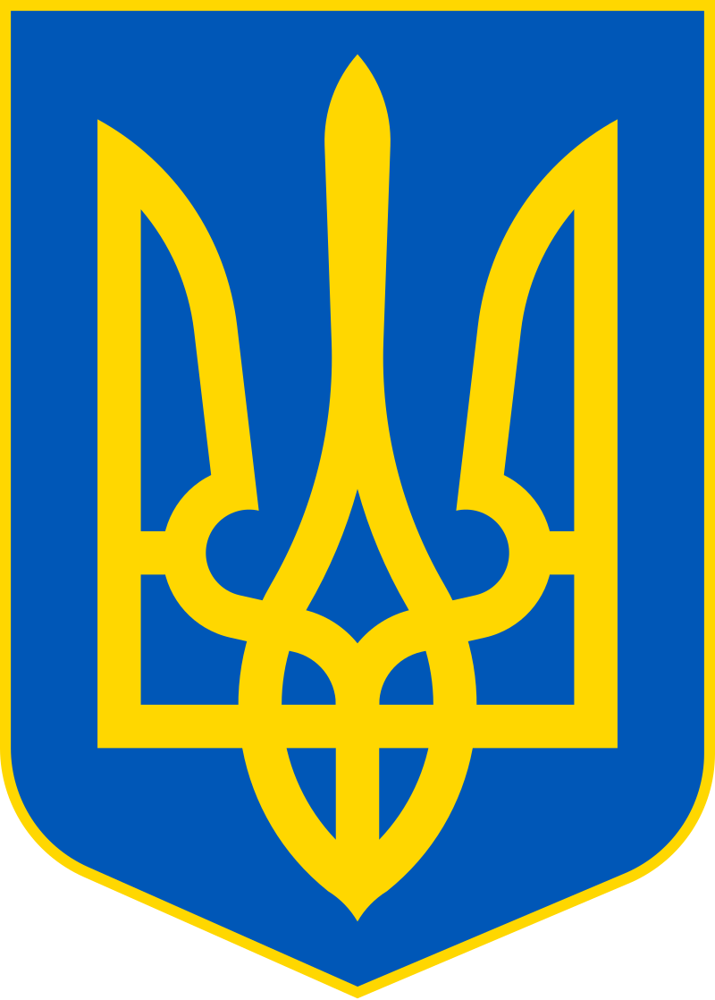
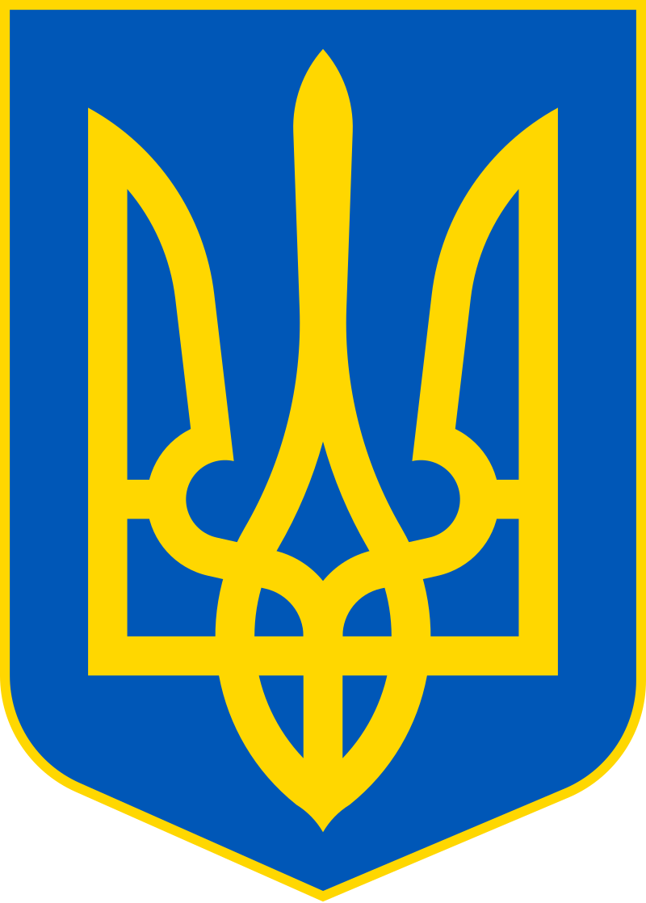

Украї́на (МФА: [ʊkrɐˈjinɐ]ⓘ) — держава у Східній та частково Центральній Європі. Охоплює південний захід Східноєвропейської рівнини, частину Східних Карпат і Кримські гори. Межує з Румунією й Молдовою на південному заході, з Угорщиною, Словаччиною та Польщею на заході, з Білоруссю на півночі та з Росією на сході й північному сході. На півдні омивається Чорним та Азовським морями. Площа становить 603 700 км². Найбільша за площею країна серед повністю розташованих у Європі.
Станом на перепис 2001 року, населення України становило 48,4 мільйона осіб. Основне й корінне населення України — українці (77,8 % населення на 2001 рік). Також офіційно корінними народами України є кримські татари, караїми та кримчаки. Крім того, значною меншиною є росіяни (17,3 % населення на 2001 рік). Історично однією з найбільших меншин в Україні були також українські євреї.
Сучасна Україна, обравши за свій герб знак княжої держави Володимира Великого, проводить свою державність від Русі київських князів династії Рюриковичів IX—XIII століть. За часів свого розквіту, у X—XI століттях, Русь була однією з найбільших і найвпливовіших країн Європи. Після монгольської навали спадкоємцем Русі стало Королівство Руське XIII—XIV століть, що згодом було поглинуте Великим князівством Литовським і Королівством Польським. Велике князівство Литовське стало фактичним продовжувачем традицій Русі, у його складі руські землі користувалися широкою автономією. Після об'єднання литовської та польської держав у 1569 році, більшість українських земель перебувала у складі федеративної Речі Посполитої.
Відновлення української державності відбулося під час великого козацького повстання, відомого як Хмельниччина, з 1648 року, наслідком якого стало утворення автономної козацької держави, Гетьманщини, або Війська Запорозького. Обмежену автономність Гетьманщина зберігала до 1764 року, при тому частина земель відійшла до Речі Посполитої, а інша частина знаходилася під протекторатом Московського царства, які поступово поглинули козацьку державу. Згодом українські землі були розділені між Російською імперією та Австро-Угорською монархією.
 
